Un minut.
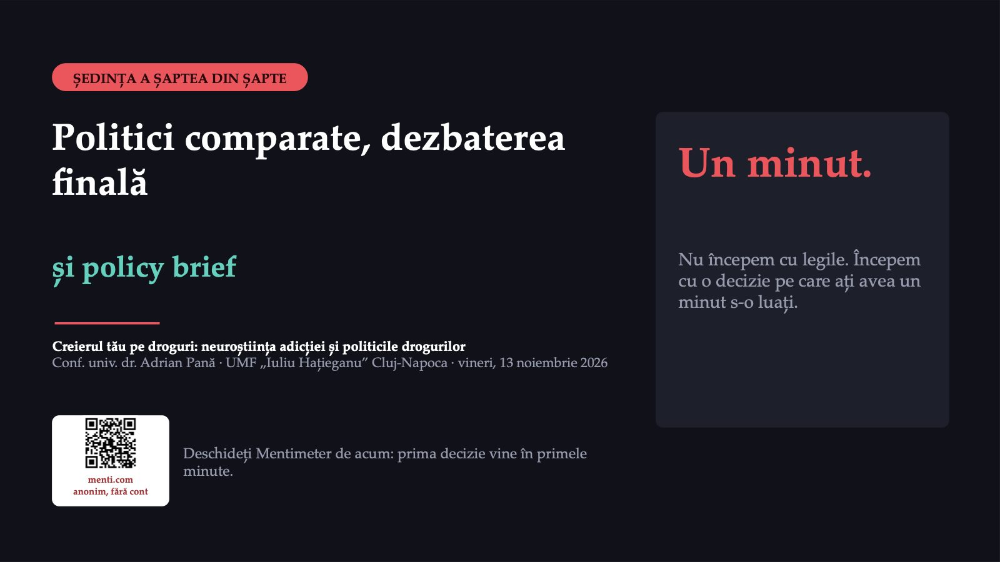
1 / 48Bună ziua. Astăzi este ultima noastră ședință. Pe fișă scrie „politici comparate” și „dezbatere”. Le vom face pe amândouă, dar nu începem cu legile. Începem cu o decizie pe care ați avea un minut s-o luați. La sfârșit, după cinci minute de odihnă, aveți chestionarul.
Ce urmează s-a întâmplat cu adevărat.
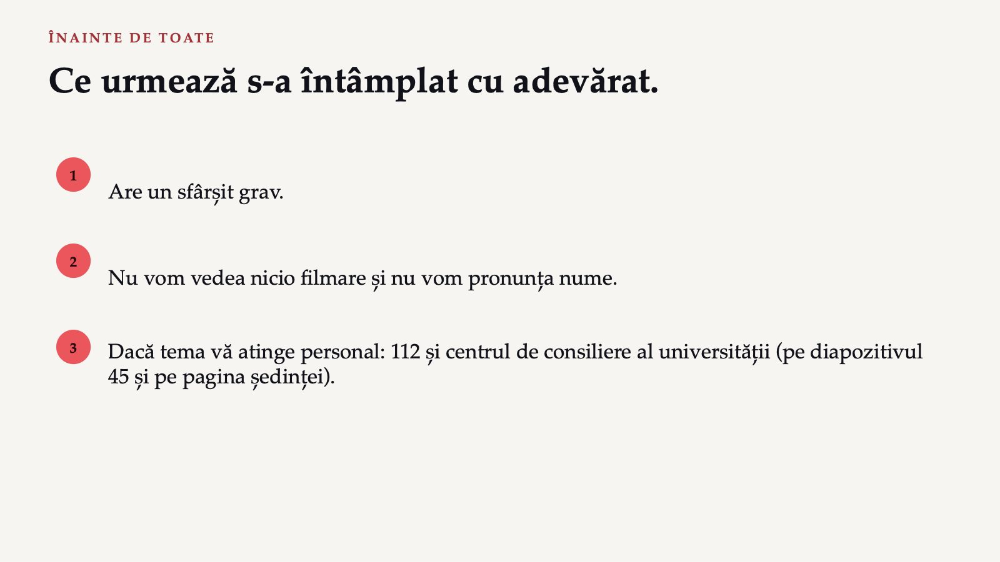
2 / 48Vă previn de la început: ce urmează s-a întâmplat cu adevărat și are un sfârșit grav. Nu vom vedea nicio filmare și nu vom pronunța nume. Adresa centrului de consiliere este la sfârșit și pe pagina ședinței.
„Prietenul tău se simte tot mai rău.”
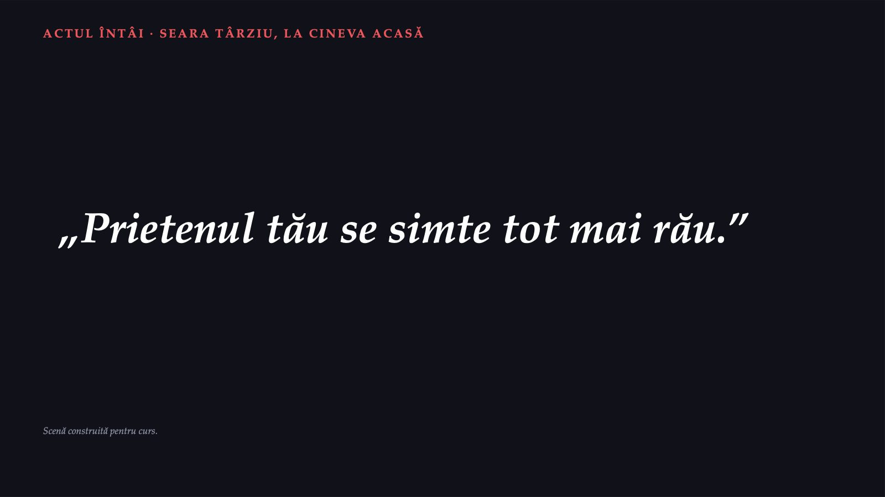
3 / 48Imaginați-vă: e seara târziu, sunteți la cineva acasă, iar cu voi este un prieten bun. Vorbește tot mai greu și abia vă mai răspunde.
„Sunt droguri în încăpere.”
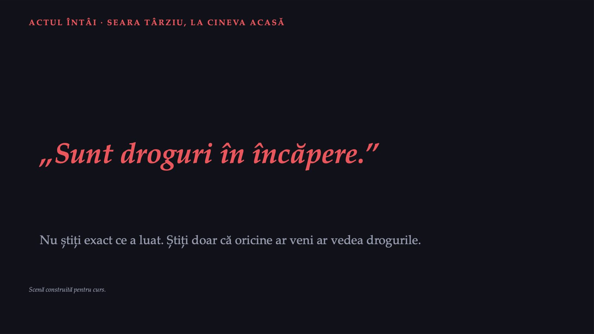
4 / 48Au consumat mai mulți, poate și voi. Nu știți exact ce a luat el. Știți doar că oricine ar veni va vedea drogurile.
Ce faci în următorul minut?
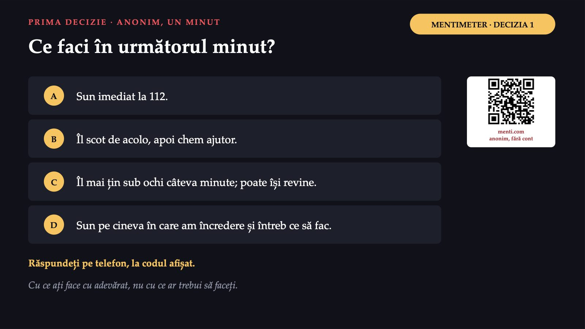
5 / 48Răspundeți pe telefon, anonim, cu ce ați face cu adevărat, nu cu ce ar trebui să faceți. Aveți un minut. Nimeni nu vede ce ați ales.
Ce v-ar face să ezitați?
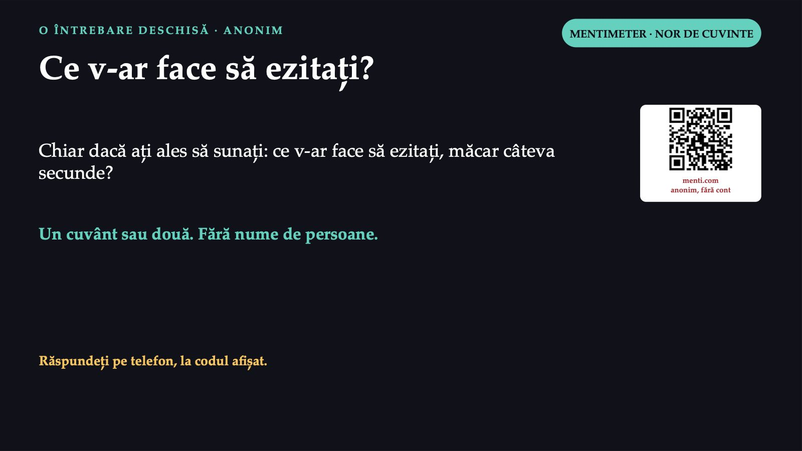
6 / 48Acum altceva. Chiar dacă ați ales să sunați, ce v-ar face să ezitați, măcar câteva secunde? Scrieți un cuvânt sau două. În primul vot spunem ce credem că am face; în al doilea, de ce ne-ar fi greu. Toată ședința de azi se ocupă de cuvintele din acest nor.
S-a întâmplat.
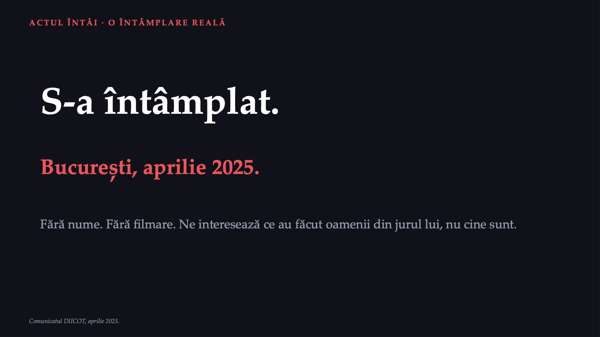
7 / 48O scenă ca aceasta s-a întâmplat la București, în aprilie 2025. Unii dintre voi știți cazul. Vă rog să nu spuneți nume și să nu căutați filmarea. Ne interesează ce au făcut oamenii din jurul lui, nu cine sunt.
Un garaj, un drog, o transmisiune în direct
![CE RELATEAZĂ PRESA, ÎN PARTE DIN DOSAR Un garaj, un drog, o transmisiune în direct 1 Potrivit presei, un tânăr de 20 de ani s-ar fi drogat în garajul locuinței celui acuzat. 2 I se face rău și leșină. 3 Cel de lângă el filmează în direct, pe o rețea de socializare. Sute de oameni privesc. COMUNICATUL DIICOT Garajul pus la dispoziție, cu știință, pentru consumul unui drog de mare risc, metadona; consumul a fost urmat de moartea victimei. Comunicatul DIICOT, aprilie 2025; presa, relatând din dosar.](diapozitive/C07/008.jpg) 8 / 48
8 / 48Ce au reținut procurorii vine din comunicatul DIICOT: garajul pus la dispoziție, cu știință, pentru consumul de metadonă, urmat de moartea victimei. Restul vine din presă, care relatează în parte din dosar. Un tânăr de 20 de ani s-ar fi drogat în garajul locuinței celui acuzat. I se face rău și leșină. Cel de lângă el filmează în direct. Presa vorbește despre sute de urmăritori.
„…dar inculpatul a ezitat, temându-se că va avea probleme dacă face acest lucru.”
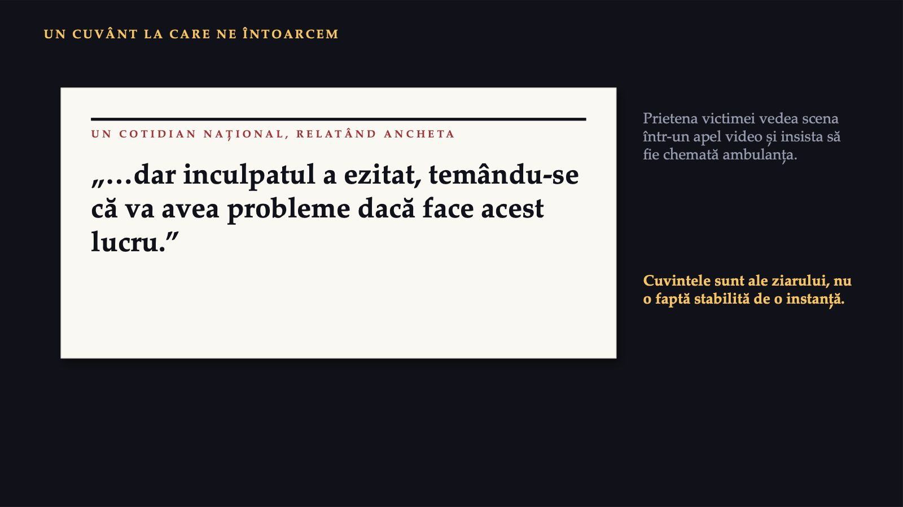
9 / 48Prietena tânărului, care vede scena într-un apel video, insistă ca cei de acolo să cheme ambulanța. Cuvintele de pe ecran sunt ale ziarului, care relatează ancheta. Nu sunt o faptă stabilită de o instanță. Rețineți cuvântul „temându-se”. Ne vom întoarce la el.
Din garaj până acasă
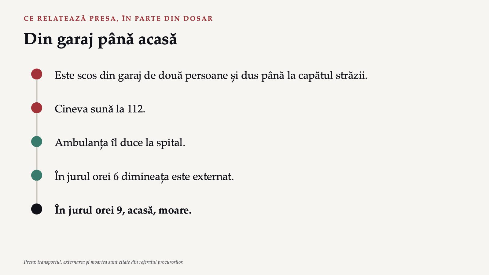
10 / 48Este scos din garaj de două persoane și dus până la capătul străzii. După aceea, cineva sună la 112. Ambulanța îl duce la spital. În jurul orei 6 dimineața este externat și ajunge acasă. În jurul orei 9 moare. Așa relatează presa, din dosar; transportul, externarea și moartea sunt citate din referatul procurorilor. Nu se știe dacă externarea a fost cerută de pacient și de familie sau dacă medicii au considerat că pacientul este în siguranță.
Ce nu știm
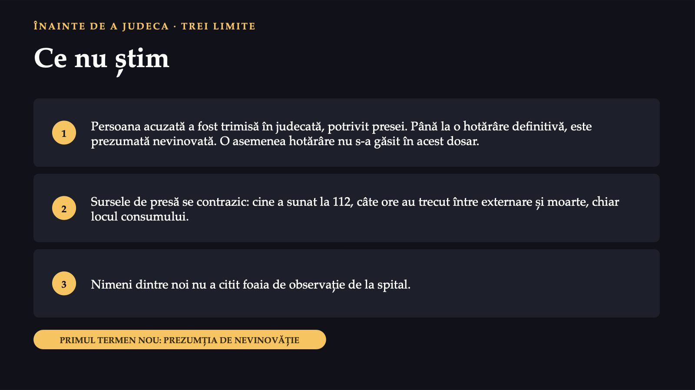
11 / 48Înainte să judecăm, trei limite. Cel implicat a fost trimis în judecată, potrivit presei. Până la o hotărâre definitivă este prezumat nevinovat, iar o asemenea hotărâre nu s-a găsit în acest dosar. Sursele se contrazic despre cine a sunat, despre câte ore au trecut și chiar despre locul consumului. Și nimeni dintre noi nu a citit foaia de observație de la spital. Primul termen nou al ședinței: prezumția de nevinovăție. De aceea, în votul următor, primul răspuns se numește „cel de lângă el”, nu „cel care a filmat”.
Cine a greșit cel mai mult?
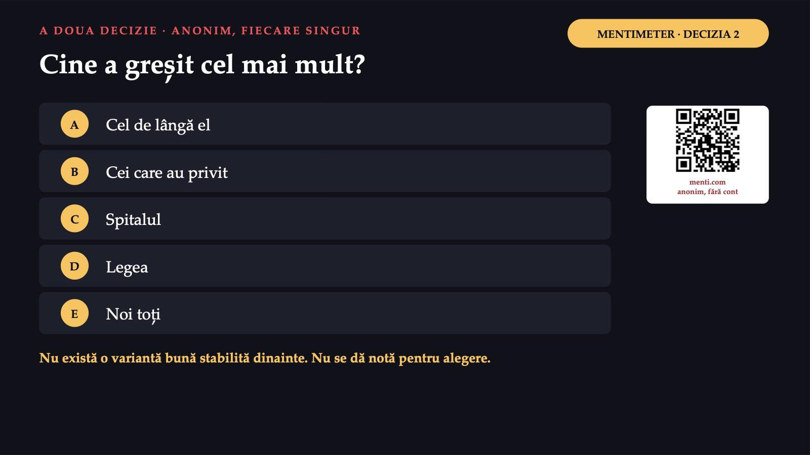
12 / 48A doua decizie. Votați pe telefon, anonim, fiecare singur. Cine a greșit cel mai mult? Nu există o variantă bună stabilită dinainte și nu se dă notă pentru alegere. Vorbim despre ce ar face cineva în locul lor, nu despre vinovăția unui om care este judecat.
Dacă teama te oprește să suni, te scuză sau te acuză?
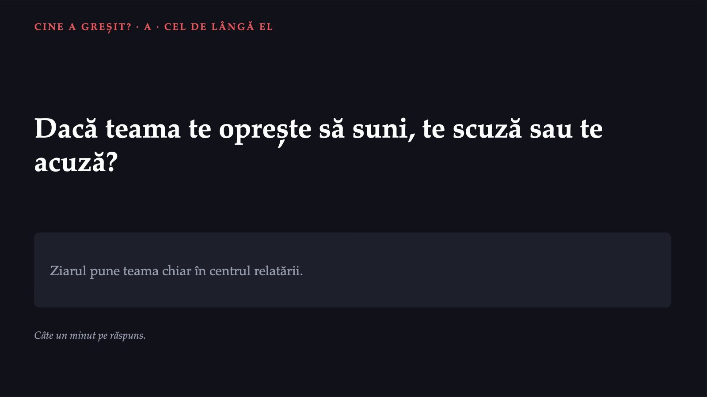
13 / 48Începem cu cei care au ales „cel de lângă el”. Cineva să spună, într-un minut, de ce. Apoi răspundeți la întrebarea de pe ecran: ce ar fi trebuit să facă un om speriat? Vorbim despre ce ar face cineva în locul lui, nu despre vinovăția unui om care este judecat.
Are un spectator vreo datorie?
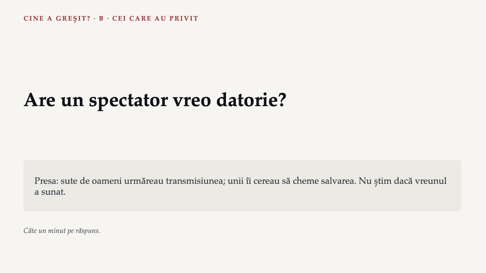
14 / 48Presa relatează că unii îi cereau în direct să cheme salvarea. Nu știm dacă vreunul a sunat. Voi, cei care ați ales această variantă, ce ar fi trebuit să facă cineva care privește pe telefon și nu știe unde se află scena? Să insiste, să caute adresa, să sune la 112 și să spună ce vede?
Ce ar trebui să știm ca să spunem că spitalul a greșit?
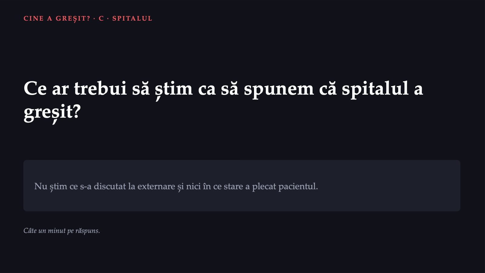
15 / 48Cine a ales spitalul are o problemă de dovadă: nu știm ce s-a discutat la externare și nici în ce stare a plecat. Spuneți-mi ce ați vrea să citiți în foaia de observație înainte de a acuza pe cineva. Vom reveni imediat la ea, cu un medic de urgență, din locul medicului, nu al acuzatorului.
Dacă legea l-ar fi protejat, ar fi sunat?
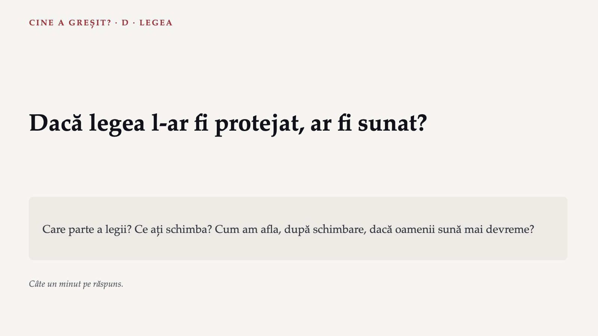
16 / 48Cine a ales legea spune că problema este scrisă într-o lege. Spuneți-mi care parte și ce ați schimba. Și cum am putea afla dacă, după schimbare, oamenii ar suna mai devreme? O lege bună pe hârtie nu dovedește că oamenii o cunosc în noaptea în care le trebuie.
Ce înseamnă „noi toți”, concret?
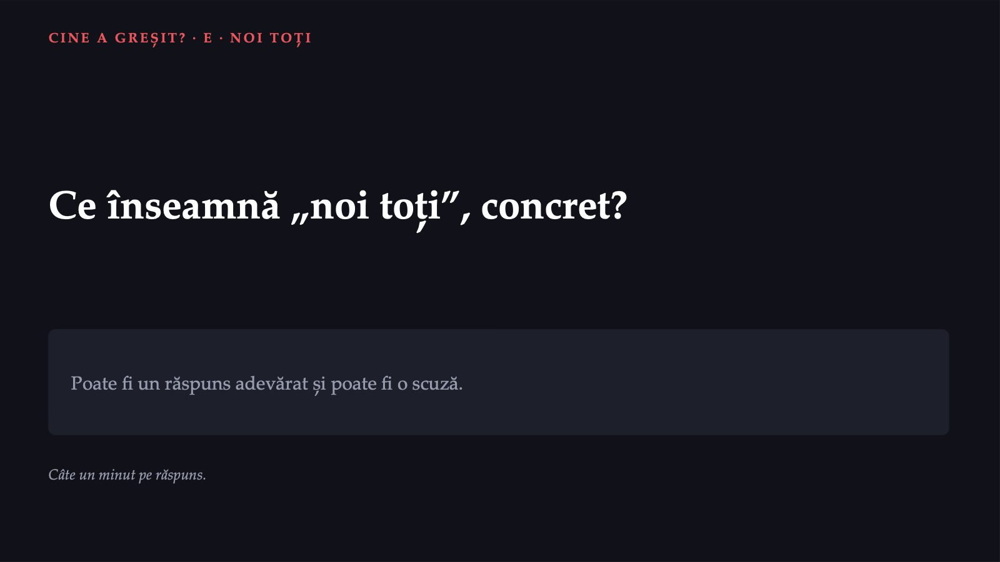
17 / 48„Noi toți” poate fi un răspuns adevărat și poate fi o scuză. Devine răspuns numai când spune ce anume ar face, de mâine, cineva din această sală. Dați-mi un exemplu.
2
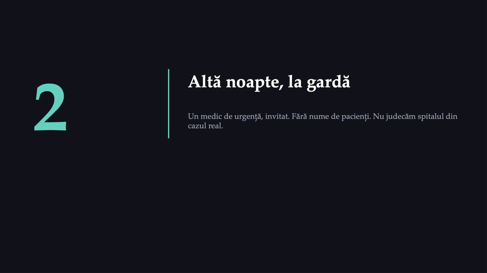
18 / 48Schimbăm locul. Peste câțiva ani veți fi de gardă, iar un asemenea pacient va ajunge la voi. Astăzi este cu noi un medic de urgență invitat. Îl rog să ne povestească o noapte de gardă cu o supradoză, fără nume. Despre cazul de la București nu îi cerem nicio părere: nu știm ce s-a discutat la externare și nu judecăm acel spital.
Anunță medicul poliția?
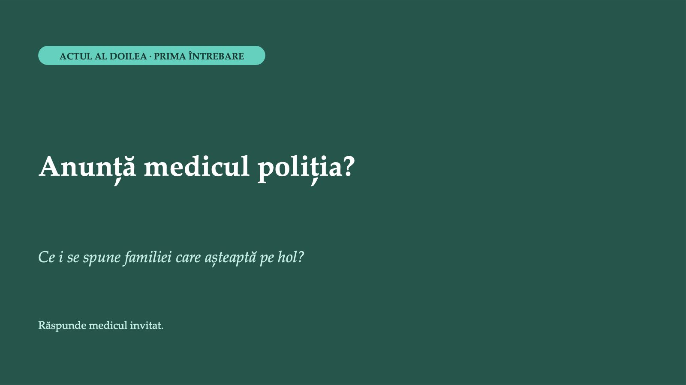
19 / 48Prima mea întrebare: când ajunge la dumneavoastră un tânăr după o supradoză, anunțați poliția? Și ce îi spuneți familiei care așteaptă pe hol?
Cine află? Mama de pe hol și poliția
![CE SPUN TEXTELE Cine află? Mama de pe hol și poliția LEGEA NR. 46/2003, ART. 10 „Rudele și prietenii pacientului pot fi informați despre evoluția investigațiilor, diagnostic și tratament, cu acordul pacientului.” ART. 21 ȘI 22 Informațiile „sunt confidențiale chiar și după decesul acestuia” și pot fi furnizate „numai în cazul în care pacientul își dă consimțământul explicit sau dacă legea o cere în mod expres”. CODUL DE PROCEDURĂ PENALĂ, ART. 291 ALIN. (2) Cine exercită un serviciu de interes public și află, în exercitarea atribuțiilor, de o infracțiune urmărită din oficiu o sesizează de îndată. Dacă obligația îl privește pe medicul de gardă la o supradoză: nelămurit în textele citite. Legea nr. 46/2003 a drepturilor pacientului; Codul de procedură penală. Nu este o opinie juridică.](diapozitive/C07/020.jpg) 20 / 48
20 / 48Pacientul de douăzeci de ani hotărăște el: rudele află numai cu acordul lui, iar informațiile despre el sunt confidențiale. Puteți asculta ce spune mama, dar nu îi spuneți nimic fără acordul pacientului; îl puteți întreba dacă acceptă să vorbiți cu ea. Codul de procedură penală obligă, în schimb, pe cine exercită un serviciu de interes public să sesizeze infracțiunile aflate în exercitarea atribuțiilor. Dacă această obligație îl privește pe medicul de gardă la o supradoză și cum se împacă ea cu secretul medical nu este lămurit în textele citite pentru curs. Consider că medicul nu are responsabilitatea informării poliției în cazul în care pacientul se prezintă după ce a luat o supradoză. Este poziția mea; textele de lege citite nici nu o confirmă, nici nu o infirmă explicit.
Cât timp rămâne sub observație un pacient care s-a trezit după naloxonă?
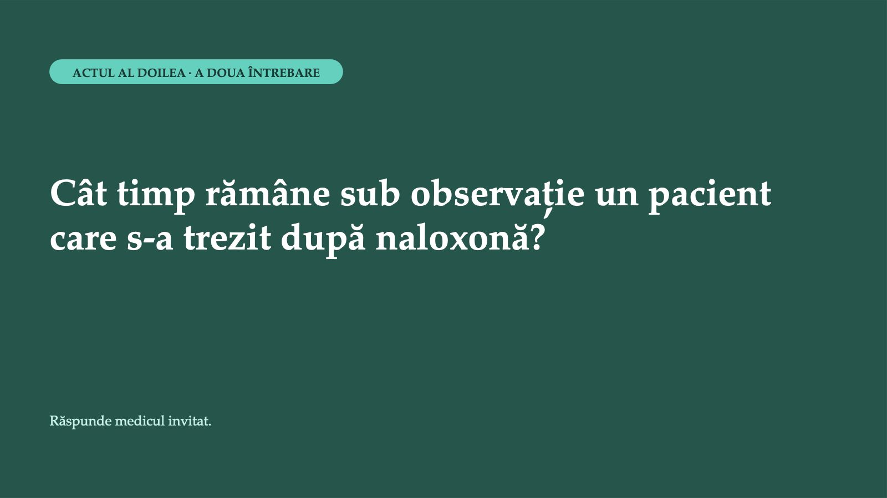
21 / 48A doua întrebare: un pacient s-a trezit după naloxonă și vrea acasă. Cât timp îl țineți sub observație și după ce decideți?
Trezit nu înseamnă în afara pericolului
![CE SPUN TEXTELE Trezit nu înseamnă în afara pericolului PROSPECTUL UNUI SPRAY NAZAL CU NALOXONĂ, APROBAT ÎN STATELE UNITE (2023) Efectul celor mai multe opioide poate dura mai mult decât al naloxonei: deprimarea respirației poate reveni după o ameliorare inițială. Pacientul rămâne sub supraveghere continuă. ORGANIZAȚIA MONDIALĂ A SĂNĂTĂȚII (2025) După resuscitarea reușită cu naloxonă, starea de conștiență și respirația se urmăresc îndeaproape până la recuperarea completă: o stare a pacientului, fără un număr de ore. UN STANDARD ROMÂNESC PENTRU DURATA OBSERVĂRII Negăsit pentru acest curs.](diapozitive/C07/022.jpg) 22 / 48
22 / 48Pacientul care s-a trezit după naloxonă poate ajunge din nou la o respirație deprimată, pentru că efectul celor mai multe opioide poate dura mai mult decât al antidotului. De aceea, OMS recomandă ca respirația și starea de conștiență să fie urmărite îndeaproape până la recuperarea completă. În textul OMS, recuperarea completă este o stare a pacientului, fără un număr de ore. Durata o decide medicul, după starea pacientului; nu știu să existe un standard românesc, iar pentru curs nu a fost găsit unul.
Are dreptul să refuze, dacă înțelege ce refuză.
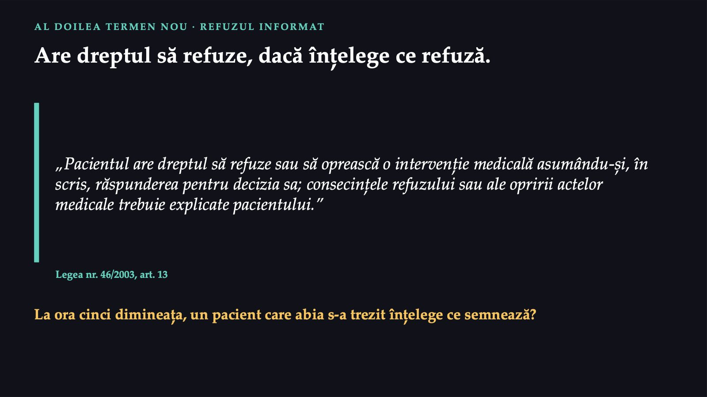
23 / 48Dacă refuză observația, are dreptul să refuze și își asumă decizia în scris. Dar legea vă cere și vouă ceva: să îi explicați consecințele. Al doilea termen nou: refuzul informat. Întrebarea voastră, ca viitori medici de gardă: un pacient care abia s-a trezit înțelege ce semnează? Textul vorbește despre refuzul unei intervenții, nu despre plecarea la cerere.
Ce primește pacientul când pleacă?
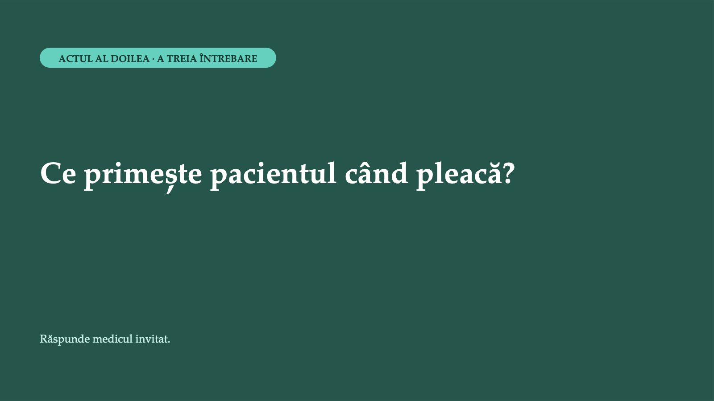
24 / 48A treia întrebare: când pacientul pleacă acasă, ce primește de la dumneavoastră?
Ce primește la plecare
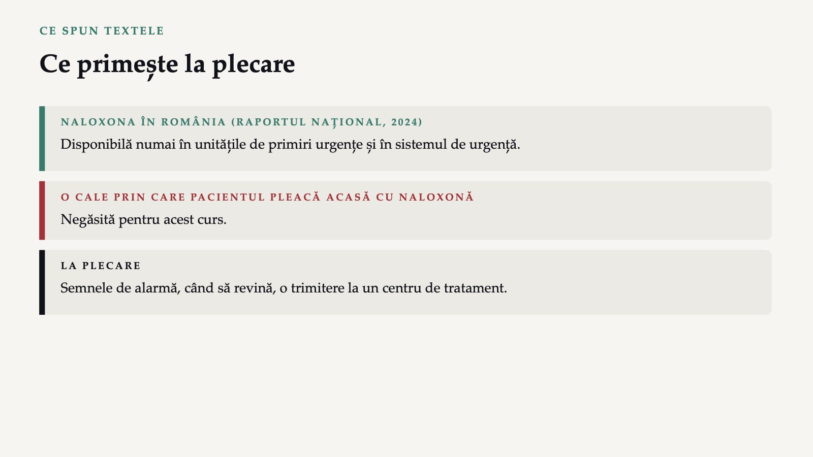
25 / 48Pacientul nu pleacă acasă cu naloxonă: în România, potrivit raportului național, naloxona era disponibilă în 2024 numai în unitățile de primiri urgențe și în sistemul de urgență. O cale prin care să plece cu ea nu am găsit. La plecare, pacientul primește semnele de alarmă, când să revină și o trimitere la un centru de tratament.
Are spitalul o regulă scrisă pentru pacientul care vine cu o supradoză?
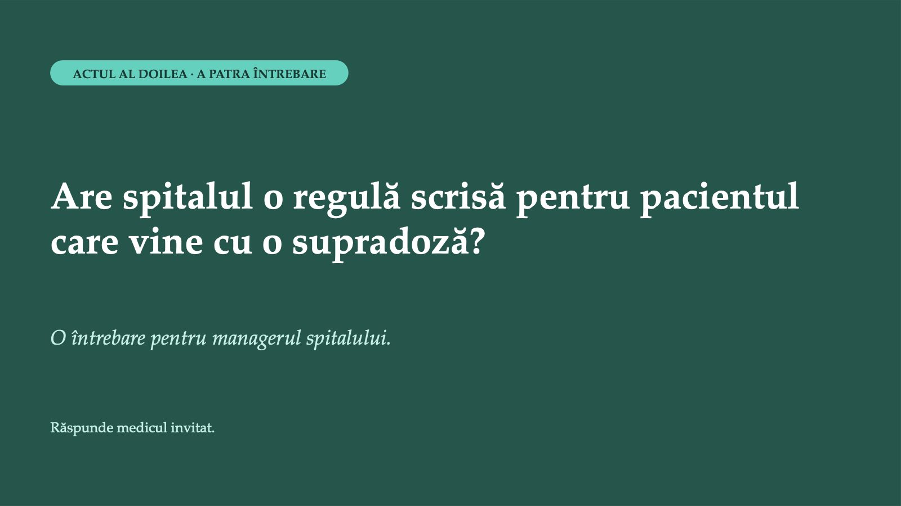
26 / 48A patra întrebare îl privește pe managerul spitalului: are spitalul dumneavoastră o regulă scrisă pentru pacientul care vine cu o supradoză? Vă ajută sau vă încurcă?
O regulă de externare se verifică cu șase întrebări
![CE SPUN TEXTELE O regulă de externare se verifică cu șase întrebări 1 Cine decide? 2 După ce criterii? 3 Ce i se explică pacientului? 4 Cine află, și cu acordul cui? 5 Ce primește pacientul când pleacă? 6 Cine răspunde? CODUL DE PROCEDURĂ PENALĂ, ART. 291 ALIN. (1) Persoana cu funcție de conducere într-o instituție publică sau într-o altă persoană juridică de drept public, care află în exercitarea atribuțiilor de o infracțiune urmărită din oficiu, o sesizează de îndată. Îl poate privi pe managerul unui spital public. Regula vreunui spital nu a fost citită pentru acest curs. Nu este o opinie juridică.](diapozitive/C07/027.jpg) 27 / 48
27 / 48Orice regulă de externare se poate verifica cu aceste întrebări: cine decide, după ce criterii, ce i se explică pacientului, cine află și cu acordul cui, ce primește când pleacă și cine răspunde. Dacă regula nu spune cine decide și ce i se explică pacientului, medicul de gardă rămâne la fel de singur. Managerul unui spital public poate avea și o obligație a lui: Codul de procedură penală îi cere persoanei cu funcție de conducere într-o instituție publică sau într-o altă persoană juridică de drept public să sesizeze de îndată infracțiunile urmărite din oficiu aflate în exercitarea atribuțiilor. Regula vreunui spital nu a fost citită pentru acest curs.
Întrebările voastre
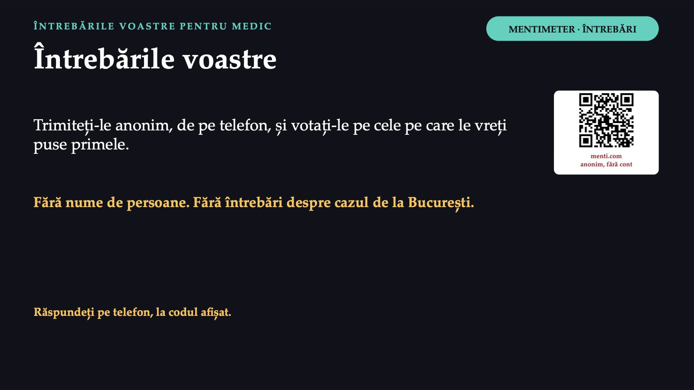
28 / 48Acum întrebările voastre. Le trimiteți anonim, de pe telefon, și votați întrebările pe care le vreți puse primele. Le citesc în ordinea voturilor. Despre cazul de la București medicul nu răspunde: vorbește din experiența lui, nu despre un dosar aflat în instanță.
Ce riscă cineva aflat lângă el? Legea nr. 143/2000
![ACTUL AL TREILEA · CE SPUNE LEGEA Ce riscă cineva aflat lângă el? Legea nr. 143/2000 Deținerea pentru consum propriu închisoare de la 3 luni la 2 ani sau amendă; droguri de mare risc: de la 6 luni la 3 ani art. 4 Punerea la dispoziție a unei locuințe, a unui local sau a altui loc amenajat în care are acces publicul, ori tolerarea consumului acolo închisoare de la 2 la 7 ani și interzicerea unor drepturi art. 5 Livrarea „cu orice titlu”, chiar fără bani închisoare de la 3 la 10 ani; droguri de mare risc: de la 5 la 15 ani; și interzicerea unor drepturi art. 2 Legea nr. 143/2000, forma consolidată la 29.03.2025. Lectura textului, nu o opinie juridică: cum se aplică decide instanța.](diapozitive/C07/029.jpg) 29 / 48
29 / 48Un cotidian național scrie, după surse judiciare, că persoana acuzată era deja trimisă în judecată pentru o faptă asemănătoare, iar comunicatul DIICOT o numește recidivistă. Situația ei nu este, deci, a oricui. Să citim ce riscă un student oarecare. Cine deține droguri pentru sine riscă închisoare. Cine pune la dispoziție un loc sau tolerează consumul riscă până la șapte ani, iar dacă un garaj intră aici decide instanța. Cine îi dă drogul altcuiva, chiar fără bani, riscă mai mult, pentru că legea vorbește despre livrarea „cu orice titlu”.
Ce nu scrie în Legea nr. 143/2000
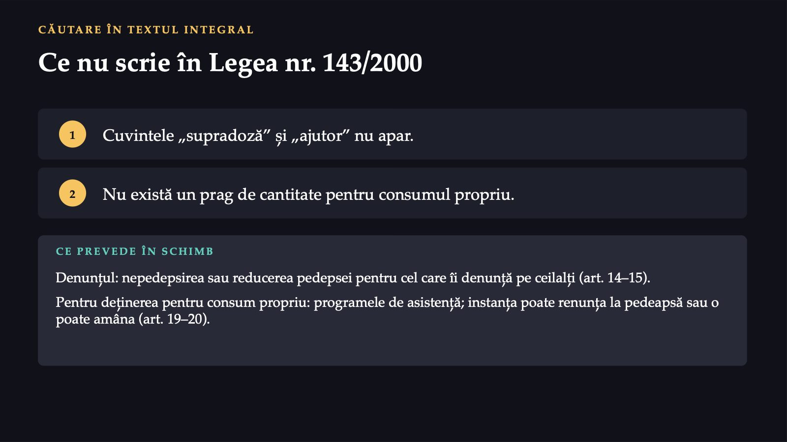
30 / 48În această lege, cuvintele „supradoză” și „ajutor” nu apar, iar legea nu are un prag de cantitate pentru consumul propriu. Cine cheamă ambulanța nu are o protecție scrisă aici. Legea prevede scutire sau reducere de pedeapsă pentru cel care îi denunță pe ceilalți. Pentru deținerea pentru consum propriu, instanța poate renunța la pedeapsă sau o poate amâna, dacă persoana respectă programul de asistență. Despre apelul la 112, această lege nu spune nimic.
Și cel care nu ajută riscă
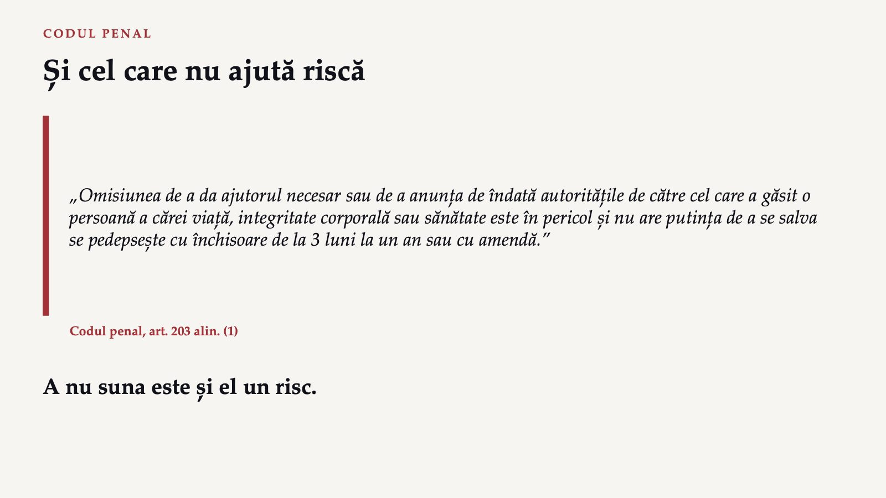
31 / 48Legea drogurilor nu spune nimic despre cel care cheamă ajutorul. Codul penal se ocupă, în schimb, de cel care nu îl cheamă. Cine găsește o persoană în pericol și nu o ajută sau nu anunță de îndată autoritățile riscă închisoare sau amendă. Alineatul următor scutește numai pe cel care, ajutând, s-ar expune unui pericol grav pentru viața, integritatea corporală sau sănătatea sa; teama de poliție nu este, în textul legii, un asemenea pericol. Cum se aplică unui prieten aflat în aceeași încăpere decide instanța. Rețineți atât: a nu suna este și el un risc.
Protecția celui care cheamă ajutorul ar trebui să depindă de cantitatea de droguri pe care o are asupra lui.
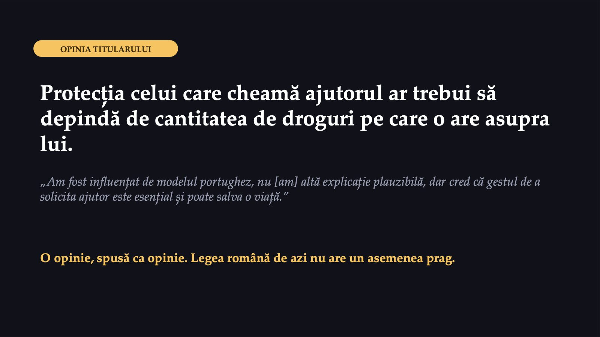
32 / 48Vă spun părerea mea, ca opinie, nu ca lege. Pentru mine, protecția celui care cheamă ajutorul ar trebui să depindă de cantitatea de droguri pe care o are asupra lui. Am fost influențat de modelul portughez, nu am altă explicație plauzibilă, dar cred că gestul de a solicita ajutor este esențial și poate salva o viață. Legea română de azi nu are un asemenea prag.
Dacă cel de lângă el ar fi sunat la 112 din primul minut, ar fi meritat protecție?
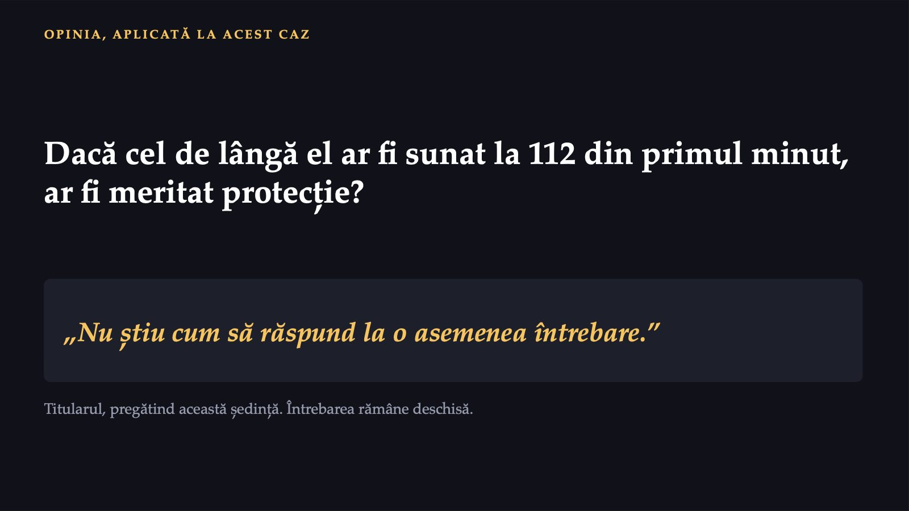
33 / 48Acum îmi aplic opinia la acest caz. Potrivit acuzațiilor, tot el pusese la dispoziție garajul. Dacă ar fi sunat din primul minut, ar fi meritat protecție? Nu știu cum să răspund la o asemenea întrebare. O las deschisă. Spuneți-mi voi.
„Dacă protecția depinde de cantitate și de rol, cine mai știe, în panică, dacă e protejat? Atunci nu sună nimeni.”
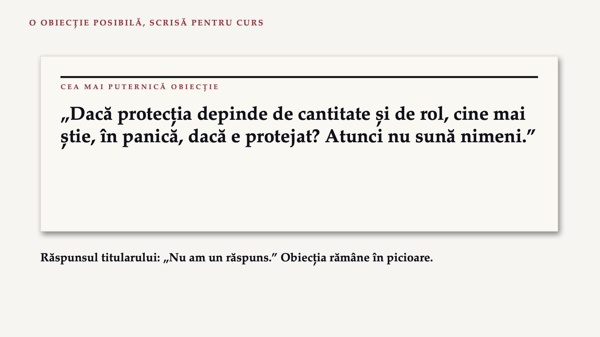
34 / 48Iată obiecția cea mai puternică la ce am spus adineauri. Nu am un răspuns. Dacă cineva din sală o susține, îl rog să o apere. Să vedem cum au încercat alte țări.
Canada, din 2017
![AL TREILEA TERMEN NOU · PROTECȚIA CELUI CARE CHEAMĂ AJUTORUL Canada, din 2017 „No person who seeks emergency medical or law enforcement assistance because that person, or another person, is suffering from a medical emergency is to be charged or convicted…” Nicio persoană care cere ajutor medical de urgență sau ajutorul poliției, pentru că ea însăși sau altă persoană se află într-o urgență medicală, nu este pusă sub acuzare și nu este condamnată pentru infracțiunea prevăzută la subsecțiunea 4(1). Condiția: dovada a fost obținută sau descoperită pentru că a cerut ajutor sau a rămas la fața locului. Sunt protejați și cei aflați acolo când sosește ajutorul, inclusiv persoana în pericol. Controlled Drugs and Substances Act, secțiunea 4.1, alin. (2)–(3). Traducerea: a notelor.](diapozitive/C07/035.jpg) 35 / 48
35 / 48În Canada, din 2017, protecția este scrisă în legea drogurilor. Cine cere ajutor la o urgență medicală, adică la o situație în care viața cuiva e pusă în pericol de o substanță, nu este acuzat și nu este condamnat pentru posesie simplă, dacă dovada a fost obținută sau descoperită tocmai pentru că a chemat ajutorul sau a rămas acolo. Protecția îi acoperă și pe cei găsiți la fața locului, inclusiv pe cel aflat în pericol. Al treilea termen nou: protecția celui care cheamă ajutorul.
Ce acoperă legea canadiană
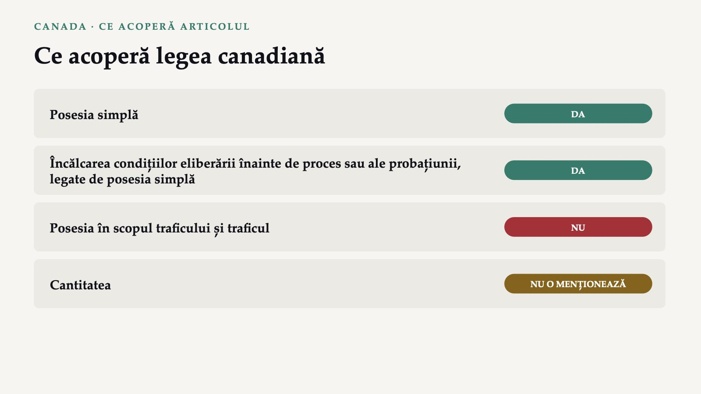
36 / 48Observați ce acoperă articolul. Posesia simplă și, de asemenea, încălcarea condițiilor eliberării înainte de proces sau ale probațiunii, legate de ea. Posesia în scopul traficului nu este acoperită, iar textul nu vorbește despre cantitate. Cel care a vândut drogul și cheamă ambulanța nu găsește aici o protecție pentru vânzare. Ar mai suna? Dacă, în practica instanțelor canadiene, o cantitate mare schimbă lucrurile nu am citit.
2000
 37 / 48
37 / 48Despre legea portugheză ați auzit în ședința a treia. Legea e din 2000 și a intrat în vigoare la 1 iulie 2001. Consumul și deținerea pentru consum propriu au devenit contravenții, până la cantitatea necesară pentru 10 zile de consum mediu. Consumatorul care cerea singur ajutor unui serviciu de sănătate nu intra sub incidența legii; prevederea privește tratamentul cerut din proprie inițiativă, nu chemarea ajutorului la o urgență. Criteriul este tot cantitatea, cel pe care l-am pomenit adineauri.
Portugalia, 2023: pragul devine un indiciu
![PORTUGALIA · LEGEA NR. 55/2023 Portugalia, 2023: pragul devine un indiciu „constitui indício de que o propósito pode não ser o de consumo.” (constituie un indiciu că scopul poate să nu fie consumul) 2008 o hotărâre: peste cantitatea pentru 10 zile, din nou infracțiune 2023 peste această cantitate: numai un indiciu dacă se dovedește consumul propriu dosarul se închide; persoana merge la comisia pentru descurajarea toxicodependenței Legea nr. 55/2023, noua redactare a art. 40 alin. (3)–(4) din Decretul-lege nr. 15/93. Traducerea: a notelor.](diapozitive/C07/038.jpg) 38 / 48
38 / 48În ședința a treia ați auzit și de hotărârea din 2008, după care depășirea celor 10 zile însemna din nou infracțiune. În 2023, o lege nouă a spus că o cantitate mai mare este numai un indiciu. Dacă se dovedește că drogul era pentru consum propriu, dosarul se închide, iar persoana merge la o comisie. Legea e din 2000, hotărârea din 2008, lămurirea legislativă abia din 2023.
Madeira, 2026: o propunere
![PORTUGALIA · DISCUȚIA NU S-A ÎNCHEIAT Madeira, 2026: o propunere „presunção legal de que se destina a tráfico” (prezumție legală că drogul este destinat traficului) Parlamentul regional din Madeira propune parlamentului național ca, peste cantitatea pentru 10 zile, să se prezume traficul; persoana o poate răsturna dovedind consumul propriu. Este o propunere, nu o lege. Soarta ei nu a putut fi aflată. Rezoluția nr. 3/2026/M, aprobată la 7 ianuarie 2026, publicată la 19 februarie 2026. Traducerea: a notelor.](diapozitive/C07/039.jpg) 39 / 48
39 / 48Discuția nu s-a încheiat. În 2026, parlamentul regional din Madeira a propus parlamentului național ca, peste aceeași cantitate, să se prezume traficul, iar cel acuzat să dovedească faptul că drogul era numai pentru consum propriu. Este o propunere, nu o lege. Soarta propunerii nu a putut fi aflată, deci nu spunem că a fost votată sau respinsă.
Trei țări, aceeași problemă
![POLITICA COMPARATĂ DIN TITLU Trei țări, aceeași problemă ROMÂNIA CANADA PORTUGALIA Cel care cheamă ajutorul Legea drogurilor nu îl menționează Protejat pentru posesie simplă și pentru condițiile eliberării sau ale probațiunii legate de ea, printr-un articol anume Nimic despre urgență în textul citit; tratamentul cerut singur, în afara legii (2000) Cel care nu ajută Codul penal pedepsește omisiunea Necitit pentru curs Necitit pentru curs Traficul Nicio protecție Neacoperit Nicio protecție în textele citite Cantitatea Fără prag pentru consumul propriu Nemenționată în articol 10 zile de consum mediu; din 2023, numai un indiciu](diapozitive/C07/040.jpg) 40 / 48
40 / 48Puneți cele trei țări alături. Legea română a drogurilor nu spune nimic despre apelul de ajutor, dar Codul penal pedepsește lăsarea fără ajutor. Canada protejează posesia simplă, dar nu pe cel care a vândut. Portugalia a scos consumul din dreptul penal, iar despre prag se discută de aproape două decenii. Nicio țară nu a rezolvat totul. Aceasta este politica comparată din titlul ședinței.
Legea să-l protejeze pe cel care cheamă ajutorul, oricâte droguri are asupra lui?
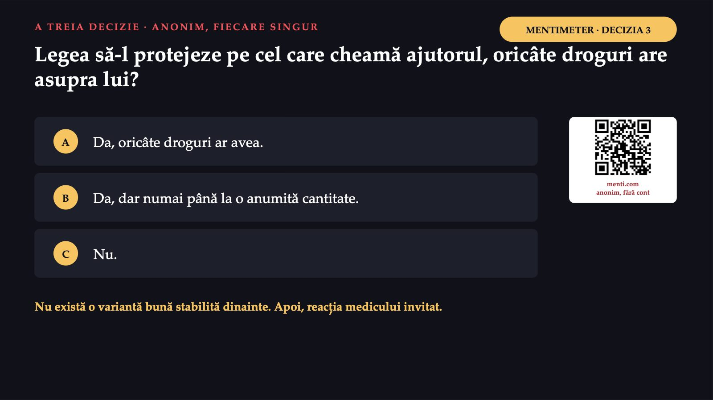
41 / 48A treia decizie. Votați pe telefon, anonim, fiecare singur. Legea să-l protejeze pe cel care cheamă ajutorul, oricâte droguri are asupra lui? Nu există o variantă bună stabilită dinainte. După vot, îl rog pe medicul nostru să ne spună ce vede în rezultat.
Cine plătește?
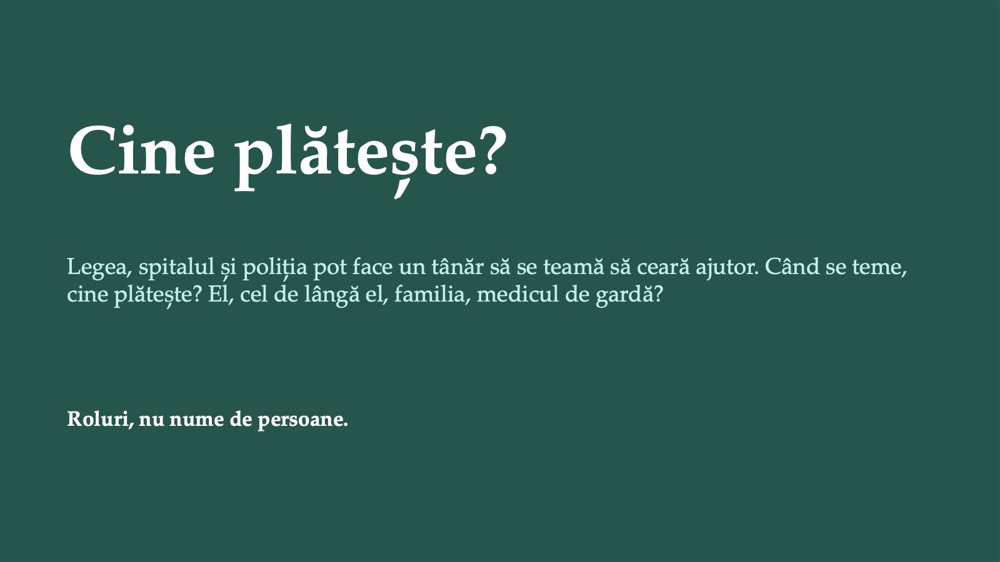
42 / 48Aceasta este întrebarea cu care vreau să plecați. Legea, spitalul și poliția pot face un tânăr să se teamă să ceară ajutor. Când se teme, cine plătește? El, cel de lângă el, familia, medicul de gardă? Numiți roluri, fără persoane anume. Pentru policy brief, întrebarea are o formă utilă: cine suportă costul unei reguli și cine suportă costul lipsei ei.
„Prietenul tău se simte tot mai rău.”
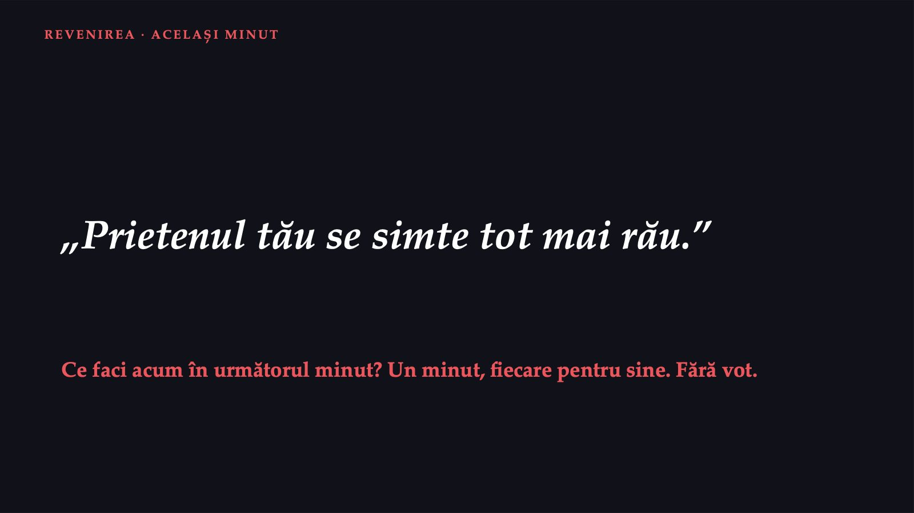
43 / 48Ne întoarcem de unde am plecat. Același prieten, aceeași încăpere. Gândiți-vă un minut, fiecare pentru sine, ce ați face acum în următorul minut. Nu mai votăm.
Sunați imediat la 112.
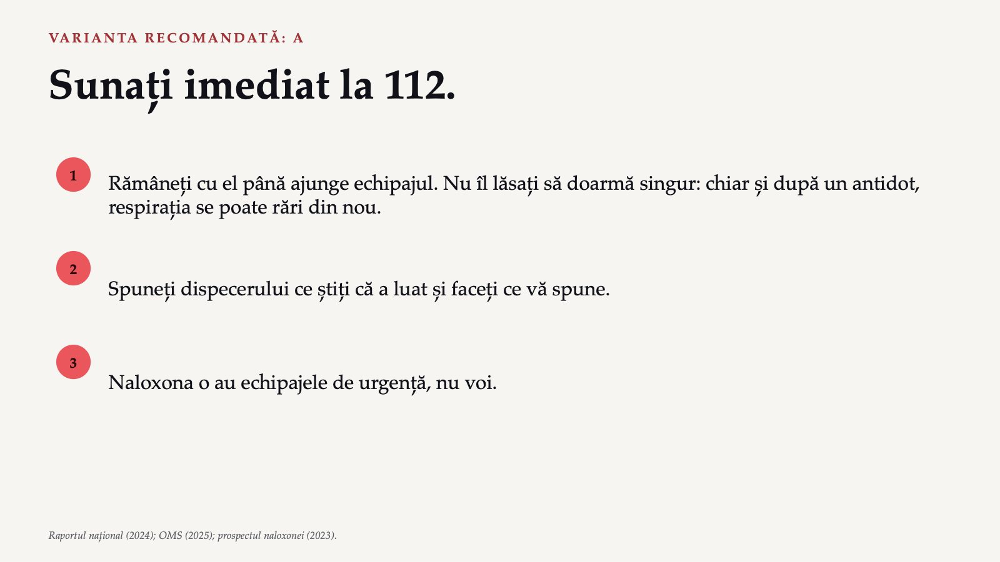
44 / 48V-am spus în a patra ședință și repet: când sunteți martorii unei supradoze, sunați imediat la 112. Nu după ce l-ați mutat, nu după ce ați așteptat și nu după ce ați întrebat pe altcineva. De aceea recomand varianta A. Potrivit OMS, decesul după o supradoză de opioide poate fi prevenit dacă persoana primește la timp suportul vital de bază și naloxona, iar naloxona o au echipajele de urgență, nu voi. Rămâneți cu el până ajunge echipajul, nu îl lăsați să doarmă singur, spuneți ce știți că a luat și faceți ce vă spune dispecerul.
112
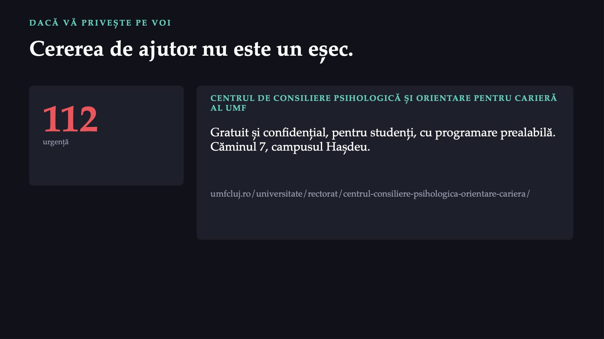
45 / 48Dacă vreuna dintre aceste teme vă privește pe voi sau pe cineva apropiat, cererea de ajutor nu este un eșec. Consilierea universității este gratuită și confidențială. Adresa este pe ecran și pe pagina ședinței.
60%
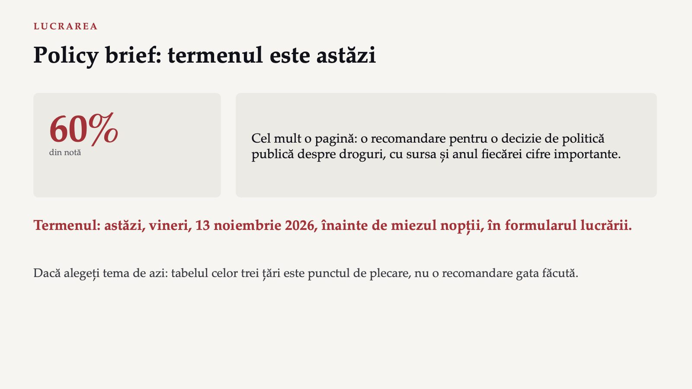
46 / 48Un minut despre lucrare. Termenul este astăzi, înainte de miezul nopții, în formularul lucrării. Cel mult o pagină: o recomandare pentru o decizie de politică publică despre droguri, cu sursa și anul fiecărei cifre importante. Dacă alegeți tema de azi, spuneți ce țară ar trebui să imite România, în ce privință și ce nu știm încă despre efectele alegerii.
Trei întrebări pentru titular
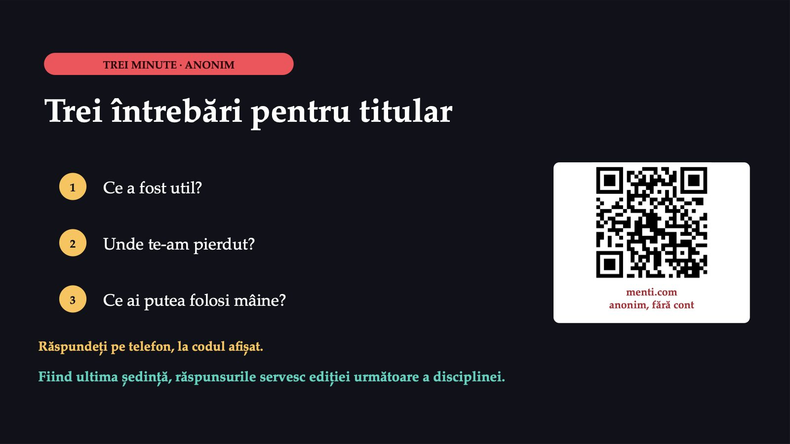
47 / 48Trei minute, înaintea chestionarului. Răspundeți anonim: ce a fost util, unde v-am pierdut, ce ați putea folosi mâine. Fiind ultima ședință, răspunsurile servesc ediției următoare a disciplinei.
Chestionarul
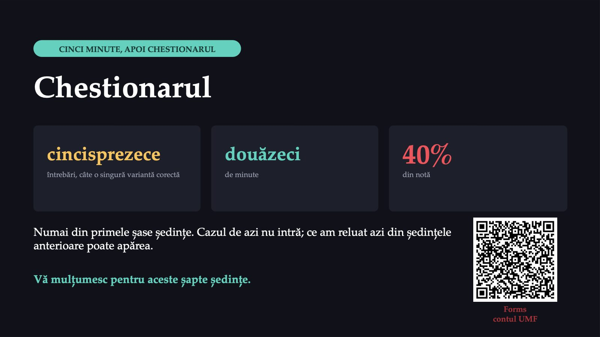
48 / 48Ne oprim cinci minute. Apoi chestionarul: cincisprezece întrebări, douăzeci de minute, fiecare cu o singură variantă corectă. Întrebările vin numai din primele șase ședințe. Cazul de azi nu intră; ce am reluat azi din ședințele anterioare poate apărea. Vă mulțumesc pentru aceste șapte ședințe.
Săgeți sau spațiu: navigare · O: vedere de ansamblu · N: notele prezentatorului · F: ecran complet · Esc: închidere